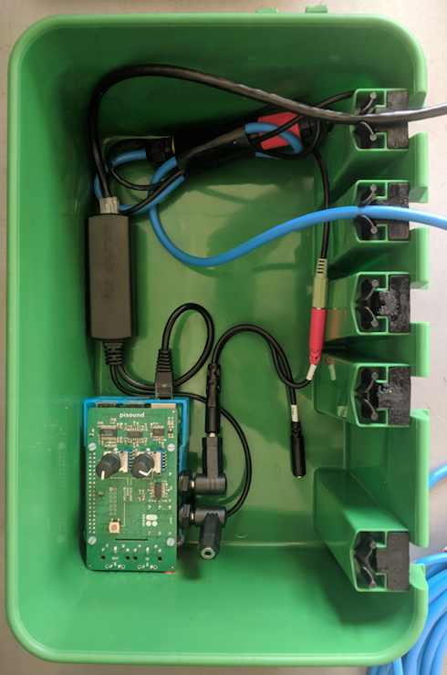

Orcasound -- Listen for Whales

Scott Veirs, Orcasound Hydrophone Network
Hack to Give Thanks, November 17, 2018
Orcasound's network, new nodes and app
 |
 |
15 years of citizen scientists listening for whales in the Salish Sea
Thanks to all the backers of the 2017 Kickstarter, plus our app key developers/designers to date, and growing team of dedicated hackers:
Paul Cretu, Skander Mzali, Steve Hicks, Tyler Crisafulli, Val Veirs, Nóra Mészáros, and Liam Reese
Beta-test at dev.orcasound.net!
Paul Cretu, Skander Mzali, Steve Hicks, Tyler Crisafulli, Val Veirs, Nóra Mészáros, and Liam Reese
/